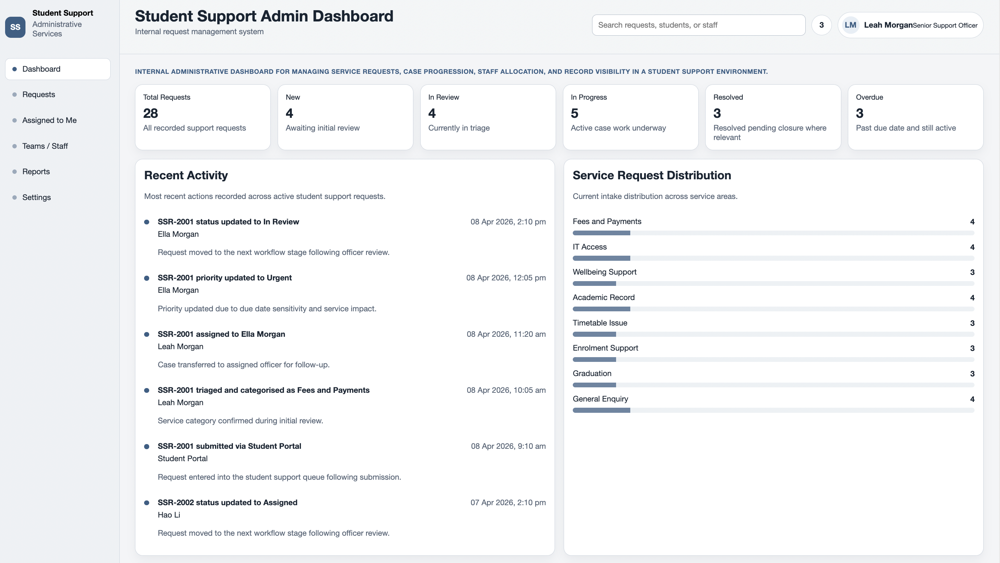
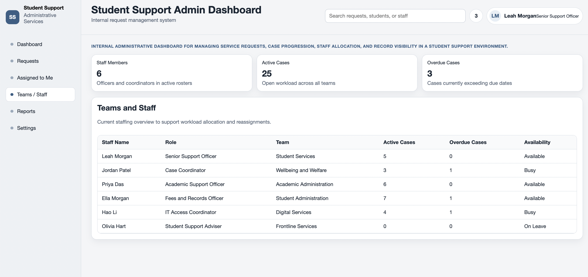
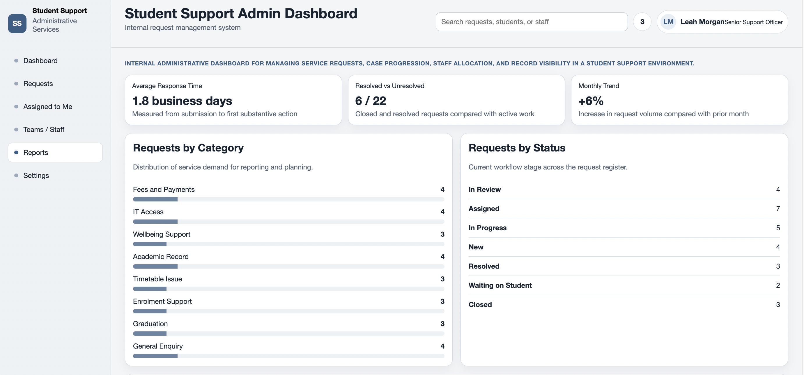

Request Register
Centralised list of service requests with filtering by status, category, priority, and assigned staff. Due dates and request ownership stay visible while staff work through the queue.
Case Study · Internal Systems / Administration
Internal Case Management System
An internal administrative dashboard designed to manage student service requests, support case handling workflows, and maintain clear records across the request lifecycle.

Context
Student support teams in university and public-sector environments often manage a high volume of requests across enrolment, fees, wellbeing, academic records, and general service enquiries. These requests require structured triage, assignment, follow-up, resolution, and clear record keeping.
This project was created to demonstrate internal systems thinking rather than public-facing interface design. It focuses on how staff review incoming requests, manage case progression, document actions, and maintain visibility across the request lifecycle.
The Problem
The Solution
The Student Support Admin Dashboard was designed as an internal administrative system to simulate how staff might manage incoming support requests in a structured environment. Rather than focusing on public-facing presentation, the interface supports case progression, ownership, and record visibility.
The system brings together a central request register, a case detail workspace, officer assignment controls, internal notes, and an audit-friendly activity log so that request handling remains visible and traceable.
Key Features
Centralised list of service requests with filtering by status, category, priority, and assigned staff. Due dates and request ownership stay visible while staff work through the queue.
Detailed request view with student information, request metadata, case controls, and supporting context for review and follow-up.
Assigned officer, status, priority, and due date controls support workflow updates without leaving the current case context.

Administrative notes help preserve continuity between staff and keep operational decisions recorded against the request.
A chronological record of submission, triage, assignment, workflow updates, notes, and resolution actions supports auditability and case history visibility.
Workflow Design
The workflow was designed around realistic administrative processes used in service delivery environments, where requests move through review, ownership, action, and resolution while maintaining a clear record of decisions.
Design Approach
The interface prioritises clarity, information hierarchy, and operational usability. The split-view layout allows staff to browse the request register while reviewing case details, which helps reduce friction in high-volume administrative settings.
Content is organised to support quick review and efficient action, with consistent sections for request information, student context, notes, and activity history.
Primary Screen
Supporting Views
This view supports workload allocation by showing active cases, overdue items, and staff availability across the service area.

This screen helps individual staff prioritise upcoming due items and monitor their current case load within the broader request workflow.

What This Project Demonstrates
Understanding of how service requests move through triage, assignment, action, and resolution.
Ability to design interfaces that support internal notes, case controls, and structured documentation.
Awareness of the importance of activity logs, ownership visibility, and traceable workflow updates.
Experience structuring request data for filtering, tracking, and day-to-day administrative visibility.
Tools Used
Reflection
Designing for an internal system shifts the focus from promotion to process. The project reinforced the importance of information hierarchy, record visibility, and interface structures that support consistent operational work rather than one-off interactions.